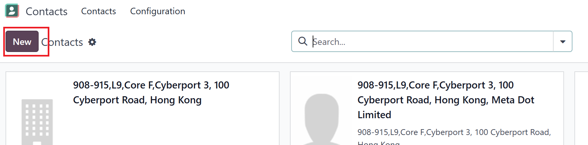

USC Odoo User Guide - Create Contact¶
Overview¶
Creating and managing contacts in Odoo is a crucial step in order processing, sales, and project management. This guide provides step-by-step instructions for adding new contacts, whether they are customers, vendors, or partners, ensuring accurate and complete information is captured.
Prerequisite¶
Before creating a contact, make sure you are logged into the Odoo system.
Why Create Contacts in Odoo?¶
- Customer Management: Keep track of customer details for sales and support.
- Vendor Management: Maintain supplier information for purchase orders.
- Partner Relationships: Store data on business partners, including billing and shipping addresses.
Step-by-Step Instructions¶
1. Accessing the Contacts Module¶
- Log into Odoo: Ensure you are logged into the USC Odoo system.
- Navigate to Contacts:
- Click on the Apps Menu (grid icon) in the top navigation bar.
- Select Contacts from the list of available modules.

Figure 1: Selecting the Contacts module from the Odoo app menu.
1. Accessing the Contacts Module¶
- Log into Odoo: Ensure you are logged into the USC Odoo system.
- Navigate to Contacts:
- Click on the Apps Menu (grid icon) in the top navigation bar.
- Select Contacts from the list of available modules.
Figure 1: Selecting the Contacts module from the Odoo app menu.
2. Creating a New Contact¶
-
Click on New: In the Contacts module, click the New button at the top left.
 -
Fill in the Contact Details:
Below are detailed descriptions of each field, including the impact and effect of the data entered:
| Field Name | Description | Impact / Effect |
|---|---|---|
| Name | Full name of the contact (Individual or Company). | Used in all sales, purchase, and communication records. |
| Company Name | Associated company of the contact, if applicable. | Links contact to the company for invoicing and CRM purposes. |
| Address | Street, city, state, zip code, and country information. | Essential for deliveries, billing, and reporting based on location. |
| Phone Number | Primary phone contact of the individual or company. | Displays on sales orders, purchase orders, and communications. |
| Mobile | Secondary contact method, typically for individuals. | Useful for urgent or direct communications. |
| Contact’s email address. | Used for sending quotations, invoices, and email communications. | |
| Website | Company or personal website URL. | Provides quick access for sales and support teams. |
| Contact Type | Select Individual or Company. | Determines whether this contact acts as a person or an entity in Odoo. |
| Tags | Keywords to categorize the contact. | Improves searchability and helps in segmenting contacts. |
| Internal Notes | Private notes visible only to internal users. | Useful for storing special instructions or private information. |
| Payment Terms | Default payment terms for this contact. | Automatically applies terms to sales and purchase orders. |
| Pricelist | Select a specific price list for this contact. | Defines product pricing when creating sales orders. |
Figure 2: The Create Contact form with fields for personal and company information.
When creating a new contact in Odoo, there are multiple tabs available to manage detailed information about the contact. These tabs include Contacts & Addresses, Sales & Purchase, Accounting, Internal Notes, Partner Assignment, and Projects. Each tab serves a specific purpose and provides additional fields to capture relevant data.
a. Contacts & Addresses Tab¶
The Contacts & Addresses tab is used to store primary and secondary contact details associated with a company or individual.
Key Elements:
- Add Button: Allows you to add multiple contacts to a single company record. This is useful for managing various points of contact within an organization, such as sales managers, purchasing agents, and support personnel.
- Contact Details Card: Displays the information of added contacts, including:
- Name: The full name of the contact person.
- Job Title: The role of the contact within the company.
- Email: The primary email address for communication.
- Phone: The landline or office phone number.
- Mobile: The contact's mobile number for direct communication.

Figure 1: Adding multiple contacts under the Contacts & Addresses tab in Odoo.
b. Sales & Purchase Tab¶
The Sales & Purchase tab is where you define whether the contact is a customer, a vendor, or both.
Key Elements:
- Customer Checkbox: Enables the contact to be used in sales operations, such as quotations and sales orders.
- Vendor Checkbox: Allows the contact to be selected when creating purchase orders.
- Payment Terms: Default payment terms that apply automatically during transaction creation.
- Pricelist: Select specific price lists for the contact, useful in sales and procurement scenarios.
c. Accounting Tab¶
The Accounting tab manages financial settings and integrations related to the contact. This tab is crucial for financial transactions but often does not require customization by standard office users.
Key Elements:
-
Receivable & Payable Accounts:
- These fields define which accounts are used in journal entries involving this contact.
Important: Do not modify these fields. Leave them as the default to avoid potential accounting discrepancies. Any changes should only be made by the accounting department or system administrator.
-
Bank Account Details:
- Store the bank account information for automatic payment processing if applicable.
- This is useful for vendor contacts when processing payments directly through Odoo.
d. Internal Notes Tab¶
The Internal Notes tab allows you to add notes that are visible only to internal users.
Key Elements:
- Notes Field: Free-text area for adding important information or reminders about the contact.
e. Partner Assignment Tab¶
The Partner Assignment tab is used to assign responsible users or salespersons to this contact.
Key Elements:
- Salesperson: Assigns a specific sales representative to manage interactions with this contact.
- Sales Team: Defines which sales team is responsible for the contact.
f. Projects Tab¶
The Projects tab is particularly useful if the contact is involved in project-related activities.
Key Elements:
- Project Management: Link projects directly to the contact.
- Task Assignments: Assign specific tasks under the related projects.
4. Saving the Contact¶
- Review All Information: Ensure that all mandatory fields are filled out.
- Click Save: Once completed, click the Save button at the top of the form.
- Verify the New Contact: The contact will now appear in the list view and be available for use in modules like CRM, Sales, and Purchase Orders.
Best Practices¶
- Complete Information: Always fill in as much information as possible to avoid issues during order processing.
- Use Tags: Add relevant tags to contacts for easier searching and filtering.
- Regular Updates: Review and update contact information periodically to maintain accuracy.
Troubleshooting¶
1. Cannot Save the Contact¶
- Check Required Fields: Make sure all mandatory fields are completed.
- Error Messages: Read any error messages carefully to understand what might be missing.
2. Duplicate Contact Warning¶
- Odoo may alert you if a contact with the same name or email already exists.
- Choose to either Merge Contacts or update the existing contact if needed.
IT Support Contact¶
- Email: ericmok@uscpower.net
- Phone: +852 6622 7663